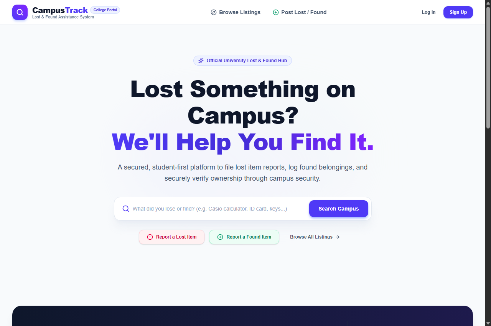
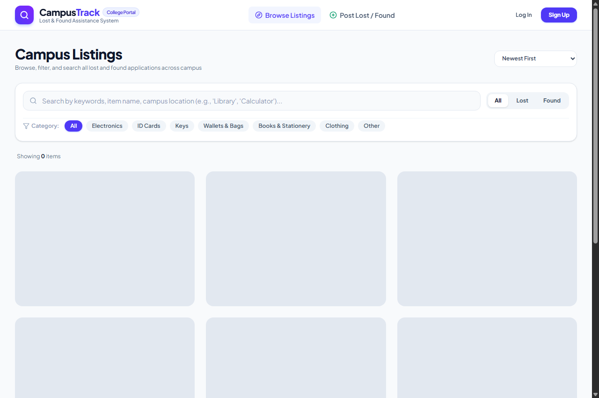
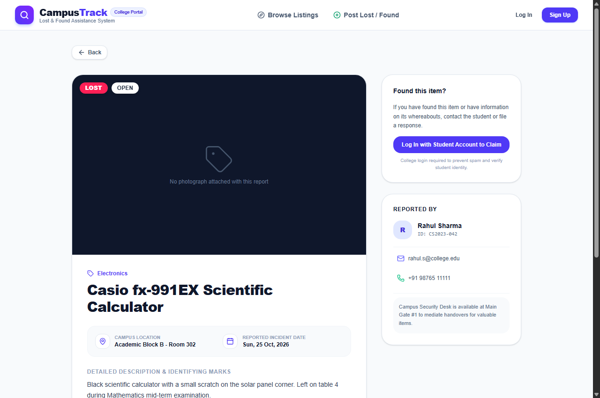
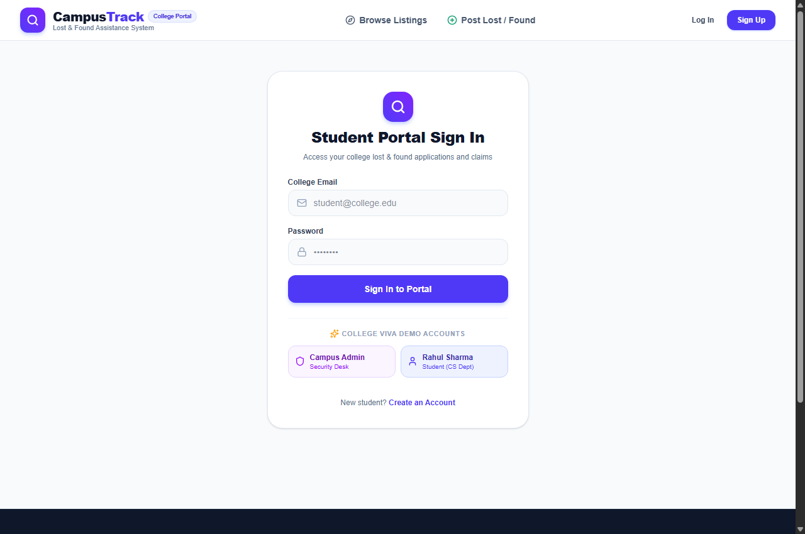
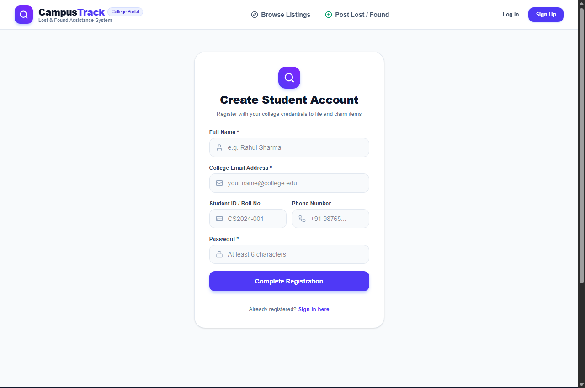

A PROJECT REPORT
ON
Submitted in partial fulfillment of the requirements for the award of the degree of
BACHELOR OF TECHNOLOGY / SCIENCE
IN
COMPUTER SCIENCE & ENGINEERING
SUBMITTED BY:
Yogesh & Project Team
Roll No / Student ID: CS2024-001
UNDER THE GUIDANCE OF:
Prof. [Project Guide Name]
Department of Computer Science & Engineering
[COLLEGE / UNIVERSITY NAME]
ACADEMIC YEAR: 2026 – 2027
This is to certify that the project entitled "CampusTrack: A Secured Centralized Lost and Found Platform for College Campuses" submitted by Yogesh (Roll No: CS2024-001) in partial fulfillment of the requirements for the award of the Degree of Bachelor of Technology / Bachelor of Science in Computer Science & Engineering from [University Name], is an authentic record of the research and engineering work carried out by them under my guidance and supervision.
To the best of my knowledge, the matter embodied in this project report has not been submitted to any other University or Institute for the award of any degree or diploma.
_______________________________
Prof. [Project Guide Name]
Internal Project Guide
Dept. of Computer Science
_______________________________
Prof. [HOD Name]
Head of the Department
Dept. of Computer Science
_______________________________
External Examiner
Date of Examination: _______________
We hereby declare that the project entitled "CampusTrack: A Secured Centralized Lost and Found Platform for College Campuses" is a genuine project completed by us under the supervision of our project guide. We further declare that this report represents our own work and effort, and that all citations, literature, and technical resources utilized have been duly acknowledged.
Date: 30th October 2026
Place: [Campus City]
Student Signature: ___________________________
Educational institutions operate across vast multi-building campuses with thousands of active students, faculty, and administrative personnel moving daily between classrooms, laboratories, sports facilities, and dining halls. In such high-traffic environments, belongings including scientific calculators, laptops, identity cards, room keys, and backpacks are routinely misplaced. Traditional lost-and-found mechanisms—relying on manual paper logbooks at security gates or informal WhatsApp groups—are unorganized, lack searchability, lack photographic evidence, and pose severe privacy and fraud risks.
CampusTrack is a centralized web-based platform developed to eliminate these problems. Architected with a modern stack—React 19, Tailwind CSS, Node.js Express 5, and an embedded SQLite database via Prisma ORM—the application facilitates seamless reporting of lost and found belongings. Crucially, the system introduces an Anti-Fraud Verification Challenge Protocol that allows finders to conceal identifying marks as security questions that only legitimate owners can answer. With local disk photo uploads via Multer, secure authentication via JWT, and an administrative security monitoring panel, CampusTrack delivers an accessible, fraud-resistant solution for academic institutions.
| Chapter | Topic | Page No. |
|---|---|---|
| - | Certificate of Approval | ii |
| - | Declaration & Abstract | iii |
| 1 | Introduction | 1 |
| 2 | Problem Definition | 2 |
| 3 | Objectives | 3 |
| 4 | Requirement Specification | 4 |
| 5 | Existing System | 5 |
| 6 | Proposed System | 6 |
| 7 | System Analysis & Design | 7 |
| 8 | Methodology | 9 |
| 9 | System Implementation | 10 |
| 10 | Testing & Quality Assurance | 11 |
| 11 | Results / Screenshots | 12 |
| 12 | Conclusion | 13 |
| 13 | Future Scope | 13 |
| 14 | References | 14 |
Across tertiary educational institutions, colleges, and university complexes, students routinely traverse sprawling multi-acre grounds daily. During transitions between lectures, computer laboratories, central libraries, and sports centers, personal possessions are regularly left behind. Misplacing critical academic or identity assets—such as graphing calculators, laptops, hall tickets, and university identity cards—causes acute academic distress and logistical interruption.
Historically, academic campuses have attempted to handle this using informal, fragmented tools: paper registers located at guard cabins, physical flyers pinned to corridor bulletin boards, or unmoderated student group chats. These methods fail to provide searchability, visual confirmation, ownership proof, or administrative tracking.
CampusTrack is engineered as a secure university web portal providing:
The absence of an automated, centralized digital tracking system in collegiate environments leads to permanent property loss, wasted student hours, complete lack of visual documentation, and vulnerability to false claims.
The key technical and functional objectives of this project are:
| Category | Specification | Details |
|---|---|---|
| Frontend | React 19, Vite 8, Tailwind CSS v4 | Responsive Single Page Application |
| Backend | Node.js v18+, Express.js 5 | RESTful JSON API with Multer & JWT |
| Database | SQLite 3 with Prisma ORM 6.4 | Embedded relational ACID-compliant store |
| Hardware | x64 Processor, 4 GB RAM, 500 MB Disk | Standard laptop or campus server |
At present, colleges rely on paper logbooks, corkboards, and student chat groups. These systems lack search indexing, cannot store photos, provide zero ownership validation, and expose personal student phone numbers to the public.
| Evaluation Parameter | Manual Security Book | Campus Chat Groups | CampusTrack (Our System) |
|---|---|---|---|
| Searchability | ❌ None | ⚠️ Poor keyword scroll | ✅ Instant Full-Text Search |
| Photo Storage | ❌ None | ⚠️ Unindexed gallery | ✅ High-Res Linked Photos |
| Ownership Proof | ❌ None | ❌ None | ✅ Security Challenge Question |
| Student Privacy | ⚠️ Guard eyes only | ❌ Phone number public | ✅ In-App Claim Notifications |
| Audit Trail | ❌ None | ❌ None | ✅ Real-time State Transitions |
CampusTrack establishes a clear, accountable lifecycle for misplaced belongings. When a student finds an item, they log its campus coordinates, attach a photo, and set an Ownership Verification Question (e.g., "What color is the keychain charm?"). Claimants must answer this question and can upload proof (e.g., purchase invoice, student ID) to claim the item. The item poster reviews the claim and approves it, automatically marking the case as RESOLVED.
The platform utilizes a modern three-tier decoupled client-server architecture:
| Table | Key Attributes | Constraints | Purpose |
|---|---|---|---|
| User | id, name, email, password, phone, collegeId, role | PK: id, UNIQUE: email | Stores student and administrator credentials |
| Item | id, title, description, category, type, status, location, date, imageUrl, securityQuestion, userId | PK: id, FK: userId | Stores lost and found item reports and photo URLs |
| Claim | id, itemId, claimantId, status, message, proofImageUrl, claimantContact | PK: id, FK: itemId, claimantId | Manages verification requests and proof evidence |
| Notification | id, userId, title, message, link, isRead | PK: id, FK: userId | Stores alerts dispatched to students |
The development followed the Agile framework over 5 structured sprints:
| Method | Endpoint | Access | Description |
|---|---|---|---|
POST | /api/auth/register | Public | Student registration with Bcrypt password hashing |
POST | /api/auth/login | Public | Authenticates credentials and returns JWT token |
GET | /api/items | Public | Lists items with search keyword, category, and status filters |
POST | /api/items | Auth | Uploads photo via Multer and publishes application |
POST | /api/claims | Auth | Submits ownership claim with answers and proof image |
PUT | /api/claims/:id/status | Owner/Admin | Approves/Rejects claim and transitions item to RESOLVED |
GET | /api/admin/overview | Admin | Retrieves full campus metrics, users, and audit feed |
The platform was validated through Unit Testing, Integration Testing, and User Acceptance Testing (UAT).
| Test ID | Test Scenario | Expected Outcome | Actual Outcome | Status |
|---|---|---|---|---|
| TC-01 | Student Registration | User created in DB; JWT token generated | Account created; token saved | PASS |
| TC-02 | Duplicate Email Prevention | HTTP 400 error: "Email exists" | Duplicate blocked cleanly | PASS |
| TC-03 | Lost Item Reporting | Item saved to DB and appears on catalog | Item displayed immediately | PASS |
| TC-04 | Photo Upload via Multer | Image saved in /uploads; URL stored | Photo displayed on card | PASS |
| TC-05 | Malicious File Guard | Non-image (.exe, .sh) rejected | Multer blocked upload | PASS |
| TC-06 | Live Search Filter | Catalog filtered by keyword / location | Accurate items returned | PASS |
| TC-07 | Self-Claim Prevention | HTTP 400: Cannot claim own item | Blocked with warning | PASS |
| TC-08 | Claim Approval Lifecycle | Item marked RESOLVED; others rejected | Status updated; user alerted | PASS |
| TC-09 | Admin Authorization | Non-admin blocked from /admin | HTTP 403 Forbidden enforced | PASS |
The application was executed and captured during live operation. Below are actual screenshots of the system:





CampusTrack successfully demonstrates how modern web engineering can solve a persistent real-world collegiate challenge. By uniting React 19, Express.js, and SQLite with Prisma ORM, the project establishes a centralized platform that eliminates information fragmentation, prevents false claims via verification questions, archives photo evidence, and provides campus authorities with full oversight.